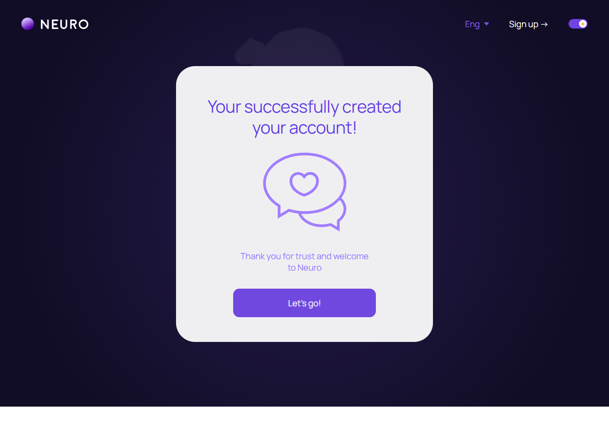
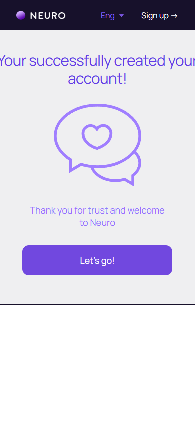

Аккаунт создан
account/account-created.html
Показать успешное создание и следующий шаг.
| Когда открывается | Подтвержденная регистрация |
|---|---|
| Данные | Сохраненный clientId; returnTo; статус подтверждения. |
| Сценарий | Let’s go возвращает к выбранному сценарию либо профилю; не создает аккаунт повторно. |
| Переходы | Обзор профиля · Постоянный диалог |
Общая и предметная логика. Снимки и подписи элементов — исходная редакция макета; поздние уточнения ТЗ имеют приоритет в своей области. Это не проверка текущего сайта.
Сопоставление с AskNebula
Существующие наблюдения 07–09.10.2026, без повторной проверки в этой передаче.
Нужна отдельная сверка соответствующего экрана/состояния референса. Отсутствие аналога не установлено.
Состояние 1280 · 1280 × 900


Элементы и ожидаемые действия
| Элемент | Название в макете | Действие | Ожидаемый результат |
|---|---|---|---|
| E001 Виден | Neuro home intent | Перейти на главную MakTaro. | Не выполнять регистрацию или сброс аккаунта. |
| E002 Виден | Eng | Выбрать доступный язык интерфейса. | Сохранить текущий маршрут и сущность; язык не означает автоматический допуск страны или перевод чужой переписки. |
| E003 Виден | Sign up → | Согласовать состояние шапки уже зарегистрированного клиента. | Нельзя повторно создавать аккаунт из успешного экрана. Предложение: шапка определяется текущей авторизацией, внешний стиль сохраняется. |
| E004 Виден | Theme intent | Переключить существующую тему интерфейса. | Сохранить UI preference без изменения данных и бизнес-состояния. |
| E005 Виден | Let’s go! | Продолжить подготовленный сценарий: Let’s go возвращает к выбранному сценарию либо профилю; не создает аккаунт повторно. | Сохранить выбранные значения после проверки. Не начать тарификацию и не списать бонус. |
Состояние 390 · 390 × 844


Элементы и ожидаемые действия
| Элемент | Название в макете | Действие | Ожидаемый результат |
|---|---|---|---|
| E001 Виден | Neuro home intent | Перейти на главную MakTaro. | Не выполнять регистрацию или сброс аккаунта. |
| E002 Виден | Eng | Выбрать доступный язык интерфейса. | Сохранить текущий маршрут и сущность; язык не означает автоматический допуск страны или перевод чужой переписки. |
| E003 Виден | Sign up → | Согласовать состояние шапки уже зарегистрированного клиента. | Нельзя повторно создавать аккаунт из успешного экрана. Предложение: шапка определяется текущей авторизацией, внешний стиль сохраняется. |
| E004 Скрыт в этом состоянии | Theme intent | Переключить существующую тему интерфейса. | Сохранить UI preference без изменения данных и бизнес-состояния. |
| E005 Виден | Let’s go! | Продолжить подготовленный сценарий: Let’s go возвращает к выбранному сценарию либо профилю; не создает аккаунт повторно. | Сохранить выбранные значения после проверки. Не начать тарификацию и не списать бонус. |